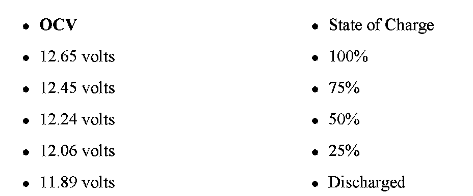
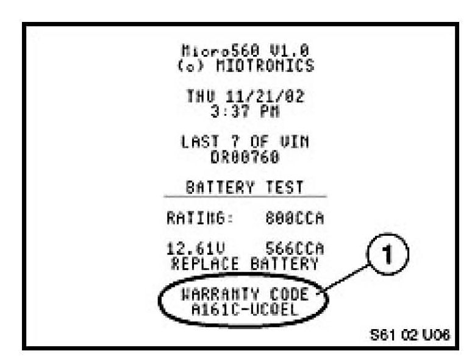

Electrical - Battery Charging And Testing Procedure: Overview
SI B 61 11 09General Electrical Systems
June 2009
Technical Service
SUBJECT
Battery Charging and Testing Procedure
MODEL
All
INFORMATION
The following proper battery testing and charging procedures are necessary to fulfill the requirements of the warranty as well as meeting customer expectations.
Vehicles with a discharged battery must have their batteries charged and tested prior to proceeding with further diagnostics.
Battery Charging Procedure
1. As described in bulletin SI B04 27 06, be certain that the charging voltage on approved BMW chargers has been set to 14.8 volts. Failure to set the charge rate to 14.8 volts will result in the charger switching to FC (floating charge) before the battery is adequately charged.
2. Be sure to refer to the Deutronic DBL-430/DBL-800 or V&H MultiCharger 750 manuals for proper charger setup procedures. Additionally on Deutronic chargers refer to attachments "DBL-430 Settings" and "DBL-800 Settings" for the correct default settings to use.
When using any Deutronic battery charger, be sure that the charging amperage has been set at 15%-20% above the amp hour rating of the battery. Since the Deutronic DBL-430 is only adjustable in amperage increments of 10, it may be necessary to round up to the next higher amperage setting. Failure to do so will result in an undercharged battery. For a 90Ah battery, set to 110A and for 110Ah, set to 130A.
The Deutronic DBL-800 charger, as well as the V&H MultiCharger 750, is self-calibrating; however, voltage and amperage can be manually set in the service menu and should be checked and adjusted as necessary, prior to charging.
3. If the vehicle is equipped with an IBS (Intelligent Battery Sensor), be sure to charge the battery from the service port or disconnect the battery from the vehicle. DO NOT connect the charger directly to the IBS.
4. A fully charged battery is indicated on the Deutronics chargers by a green LED and the letters "FC" for "Floating Charge" being visible in the LCD display. The V&H MultiCharger 750 will display "Battery Full" in the LCD display.
Midtronics Battery Testing Procedure
1. All battery tests must be performed directly at the battery.
2. For in-vehicle testing, all electronic loads must be off, as a high-current draw in the period before sleep mode may adversely affect the result.
3. Both Midtronics tester clamps must be firmly attached to the appropriate battery terminals which have been cleaned with a wire brush. Follow the menu prompts.
4. Select "IN-VEHICLE" or "OUT-OF-VEHICLE" (as appropriate).
5. Select the CCA rating from the vehicle battery label.
6. If the warning "SYSTEM NOISE" is displayed, be sure all electrical loads such as open doors, interior lighting or active systems are turned off. In rare cases, it is possible for an active BUS line to produce sufficient electrical noise to hamper testing. In such instances, the BUS must be allowed to enter sleep mode before proceeding, or the vehicle may be placed in sleep mode using the diagnostic equipment.
7. Dependent on the battery voltage, the question "BEFORE CHARGE" or "AFTER CHARGE" will be displayed.
^ "BEFORE CHARGE" must be selected if the battery has not yet been charged.
^ "AFTER CHARGE" must be selected after the battery has been charged.
8. After testing, use the Midtronics printer to print a result ticket with the warranty code. The following tester results are possible:
a. "CHARGE & RETEST" - If the battery has less than approximately 8 volts when tested and the tester does not find the battery to be defective (e.g., a shorted cell), the battery will be tested and the message "CHARGE & RETEST" will be displayed.
b. "GOOD--RECHARGE" - If the tester displays "GOOD--RECHARGE", the battery must be retested after recharging.
Note:
Should the tester display "GOOD--RECHARGE" after fully charging, print a second result ticket and charge the battery for two additional hours. If the tester still displays "GOOD--RECHARGE", print the results and replace the battery.
c. "GOOD BATTERY" - Only release the vehicle when the tester displays "GOOD BATTERY" and the open circuit voltage (OCV) is 12.6 volts or higher this indicates a fully charged battery. Note that the display "GOOD BATTERY" is not in itself an indication of a fully charged battery. This is important, as the Midtronics tester does not require a 100% state of charge to determine whether the battery is good; however, a 100% state of charge is necessary to insure proper and trouble-free operation of the vehicle's electrical system components.
d. "REPLACE BATTERY" - If the tester determines the battery to be defective, the message "REPLACE BATTERY" will be displayed.
9. Retain all Midtronics printouts with the warranty code in the vehicle file.
Additional Information
1. Below is an Open Circuit Voltage chart listing battery voltage as it relates to the state of battery charge.
An Open Circuit Voltage measurement is only valid if the surface charge has been removed. It can be measured using a multimeter. It is also the voltage shown on the Midtronics printout. To remove the surface charge, turn on the high beams for one minute and then allow the battery voltage to stabilize (approximately one minute) before testing.

Open Circuit Voltage vs. State of Battery Charge
2. If the Midtronics tester detects a surface charge, it will be displayed on the tester. Follow the prompts to turn on the headlights for about one minute, and then follow the prompts. The tester will continue
testing the battery automatically. For best results when testing the battery out of the vehicle, always remove the surface charge before testing if the battery has been charged.
3. Do not replace a battery just because the eye is black. The green eye is only an indicator of the cell to which it is attached.
4. When a discharged battery is encountered, check the function of the charging system. Perform the "Energy Diagnostics" test plan (B61 13 05) and, if necessary, check the electrical system for closed circuit current draw as per SI B61 08 00.
5. Other related Service Information bulletins:
^ SI B04 25 02 Operation of current Midtronics tester
^ SI B04 11 02 - Operation of Deutronic DBL-430 charger
WARRANTY INFORMATION
Warranty Code for claims relating to all BMW Batteries
The warranty code is an encrypted code that includes all of the information from the printout.
Excluding the situation described in Note 2 (below), the Midtronics tester must be used for testing batteries with charge related defects, and that are to be claimed under warranty.
On completion of a battery test, print out the results, and file the printout with the completed repair order for future reference, if requested.

The printout contains a warranty code (1). This code must be included in the "Comments" section when submitting the warranty claim. Failure to quote the warranty code in the comments of the warranty claim may result in a delay in processing or refusal of the warranty claim.
Notes
1. The "Warranty Code" is not an authorization number to replace the battery. Only replace the battery when this is stated in the test results (for example, "Replace Battery") or in the special case identified in 8b), above.
2. For vehicles with power management systems (vehicles with an IBS [Intelligent Battery Sensor]): If the battery is damaged due to discharge prior to QC1, depending on the vehicle model, either the message "Battery damaged, replace battery before delivery" will show during CBS Handover Inspection, or a similarly worded Check Control message will be displayed in the instrument cluster. In this case, a Midtronics printout is not required because the CBS message will be transmitted automatically within the FASTA data.
3. Battery failures that are the result of storage neglect or physical damage will not be covered by the BMW New Vehicle Limited Warranty.